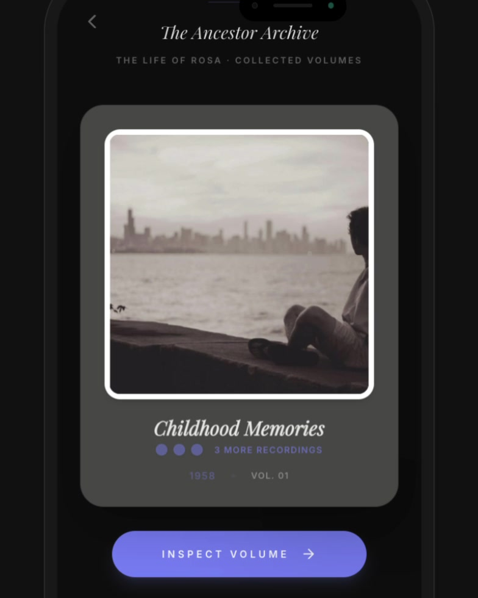
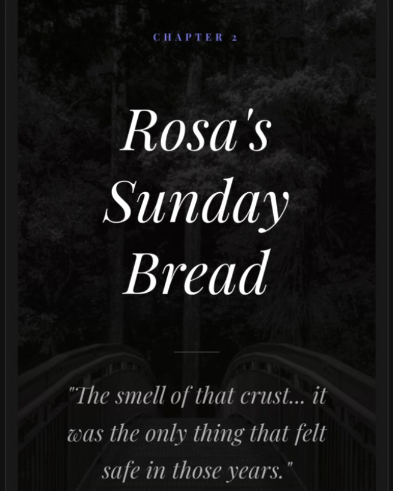

01 · Feature list → archive object
AIHelped generate many ways to organize memories.
My interventionI rejected the productivity-app framing and turned recordings into collected volumes.
AI Product Design · 2026
Turning fragmented family memories into a curated, living archive.
Capture→Curate→Preserve
01 — Research Signal
I began by using Claude to scan Reddit conversations for recurring emotional pain points around family memory and loss. One pattern kept resurfacing: people regretted the questions they never asked while older relatives were still alive.
01 · Source
I used AI to accelerate the search across many fragmented conversations rather than manually browsing one thread at a time.
02 · Signal
The recurring pain was not simply losing photos or recordings. It was losing context, voice, and the chance to ask follow-up questions.
03 · Design question
Judgment
AI surfaced the signal. Choosing which signal mattered was the first design decision.
02 — From Signal to Product Focus
My first concept treated every promising feature as part of the product. AI made it easy to generate breadth; the harder work was deciding what the product should actually stand for.
Useful ideas individually, but together they described a feature set rather than a focused product.
I brought the feature set to Gemini as a second product and market-analysis perspective. That reframed the opportunity: recording and content generation already had many existing solutions. The harder problem was what happened after capture.
More memories do not automatically create meaning.
Families lose stories they wish they had captured.
Capturing more creates even more photos, audio, and fragments to organize.
Help people turn fragments into a coherent family artifact.
Where the initial ideas landed
3 / 6
of the initial feature ideas ended up serving curation, the job the product was rebuilt around.
Each block is one idea from the initial feature set, grouped by the product job it maps to in the final strategy.
Capture1
Curate3
Preserve2
The shift
Capture more→Curate meaning
AI contributed breadth and analysis. Making curation the center of the product was my call.
03 — Product Strategy
Once curation became the core idea, I used one simple filter for feature decisions: does this interaction help a memory move from fragment to story?
01 · Capture
The experience begins with the person rather than the database: who the story is for, the relationship, and a topic that feels natural to talk about. During recording, the interface stays deliberately sparse so attention remains on the conversation.
02 · Curate
The product does not treat every transcript, photo, or quote equally. Recorded material is reorganized into stronger moments, matched with relevant imagery, and shaped into narrative sequences that feel intentional rather than chronological by default.
03 · Preserve
The final output is designed less like cloud storage and more like an heirloom: collected volumes, chapter structures, page turns, bookmarks, and storybook layouts give the archive a sense of permanence.
04 — Designing the Emotional Language
A family archive shouldn’t feel like a productivity app. I borrowed from objects people already associate with keeping, rereading, and passing stories down.

Study 01
Recorded memories appear as collected volumes rather than files in a list. The bound-book metaphor gives each story a sense of weight and completion.

Study 02
Serif type, chapter openings, pull quotes, and full-bleed imagery turn generated content into something closer to a memoir than a transcript.
Study 03
Cinematic playback uses photography, pacing, and restrained captions to make a recorded memory feel experienced rather than merely summarized.
Design fingerprint
Linen & paper textureBookmarksPage turnsProgress earned through recordingEditorial imagery05 — Working With AI
01 · Feature list → archive object
AIHelped generate many ways to organize memories.
My interventionI rejected the productivity-app framing and turned recordings into collected volumes.
02 · Categorized content → narrative pacing
AICould assemble and rewrite memory fragments quickly.
My interventionI reorganized them into chapters, openings, pull quotes, and cinematic sequences.
03 · Generated UI → designed artifact
AIAccelerated prototypes and implementation.
My interventionWhen prompting stopped improving hierarchy, typography, or pacing, I moved into Figma and code and finished the interaction directly.
Judgment, not generation, became the bottleneck.
AI let me explore more directions, faster. The design work was deciding which ones belonged in the product — and knowing when to stop prompting and start making.
The tool made more directions possible.
The product came from choosing.